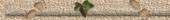

| |
|
Chère Angélique,
un livre plein de bon goût. La qualité élevée vaut à cette femme.
Mille baisers
Hannes
|
|
Eintrag #73 von Johannes
Seidl am 30.10.2006 um 17:01 Uhr
|
|

|
|
Fügen Sie hier
bitte Ihren Eintrag zum Gästebuch hinzu!
|
|
Eintrag #72 von Schwittek am 21.10.2006 um
23:40 Uhr
|
|
|
|
Hi! You have
wondeful guestbook! Thnks for you work! Have a nice day!
Timon.
|
|
Eintrag #71 von BaseMan am
15.10.2006 um 13:40 Uhr
|
|
|
|
Fügen Sie hier
bitte Ihren Eintrag zum Gästebuch hinzu!
|
|
Eintrag #70 von Seidl
Johannes am 12.10.2006 um 10:04 Uhr
|
|
|
|
Ihr lieben
Endes,
auf diesem Wege Euch einen ganz herzlichen Gruß aus der Hansestadt
Hamburg.
Große Freude machten mir die Bilder mit den Kindern und Schlumpi - wie
die Zeit vergeht!!!
Und noch eine Frage an die Expertin (Experten):
Auf einer Ostpreussenkarte von anno XX ist nahe des Ortes Lyck eine
Ortschaft/Gehöft mit Namen "Siedelberg" verzeichnet. Und nördlich von
Salzburg (nahe Mattighofen) gibt es einen Hügel, der Siedelberg heißt.
Kann es da einen Zusammenhang geben?
Z.B. mit der Vertreibung der Salzburger (Christen durch Katholiken),
die ja in Ostpreußen aufgenommen wurden.
Danke für jegliche Info.
Bis bald -vielleicht mal auf einen Besuch in der Alten Dorfstraße-
Euer Rüdiger
www.der-weg-zum-leben.de
|
|
Eintrag #69 von Rüdiger
Siedelberg am 19.09.2006 um 15:24 Uhr
|
|
|
|
Hello,
I am in search of the family in Lithuania (WILLGALIES Willgallis).
My father is born in Lithuania, (Jankeiten, Kollaten),Willgalies
Walter Born February 19, 1927.
His/her/ mother I suppose that she is born there low, are name is,
Willgalies maria (marie) maiden name is born in Lithuania (Kretinga)
23 February 1897.
I thank you for all information that you can give me,
Sincere greeting thank you
Willgallis raoul
Willgallis raoul
20AV joseph-els
68310 Wittelsheims (France)
Tel :03-89-55-28-82
Email : willgallis.raoul@aliceadsl.fr
Pseudo name : fannyroutard
|
|
Eintrag #68 von willgallis raoul am
15.09.2006 um 18:39 Uhr
|
|
|
|
Wilhelm
willgallis you aite of the family of william willgallis?
I am French, I make some research on the family willgallis in
Colorado, Jefferson, Arvada.William Willgallis died in 1994 was
himself my uncle.I look for a telephone number or an address on
Katharine Willgallis aged of 84 years.
If him you wound if you can help me, I thank you beforehand.
Know very important for me and my research.I apologize for the
mistakes in English.Thank you for your help.
|
|
Eintrag #67 von willgallis raoul am
15.09.2006 um 18:37 Uhr
|
|
|
|
Sehr geehrte
Frau Ende, sehr geehrter Herr Ende,
zunächst muß ich Ihnen ein großes Lob für Ihre Internetseiten, deren
Inhalt und Umfang aussprechen. Dies ist nun auch der Grund, weshalb
ich mich an Sie wende, da Sie auf die Nachkommen von Anton Meinung aus
Witterda bei Erfurt verweisen können. Als Großcousin der heute u. a.
in Erfurt lebenden Meinungs interessiert mich deren
Familiengeschichte. Sind Ihnen möglicherweise Angaben zu den Eltern
von Kurt Meinung bekannt? - Ich weiss lediglich vom Hören-Sagen, dass
die Vorfahren aus Witterda bei Erfurt stammen sollen. - Können Sie mir
vielleicht weiterhelfen?
Mit freundlichen Grüßen
Bernhard Drapatz
|
|
Eintrag #66 von Bernhard
Drapatz am 23.08.2006 um 17:19 Uhr
|
|
|
|
Hier noch
nachträglich meine E-Mail-Adresse, die ich vergessen hatte.
|
|
Eintrag #65 von Arndt
Richter, München am 06.08.2006 um 09:35 Uhr
|
|
|
|
Guten Tag Frau
Kathrin Ende,
ich habe gerade bei Goggle den Begriff "Mutterstamm" eingegeben, weil
in Kürze im Verlag Degener eine kleine Broschüre von mir erscheint,
die den Titel hat:
"Die Welt der vernachlässigten Abstammungen: "Mutterstämme",
Töchterketten. Eine Beispiel-Mutterstammtafel als Aufruf zur
Vervollständigung! Und eine Gesetzmäßigkeit im Geschlechterverhältnis
von Ahnen-Geschwistern."
Gratulation zu Ihrer trefflichen allgemeinen Beschreibung des
Mutterstammes! Ich weiß wovon ich spreche: www.genetalogie.de ! Bitte
teilen Sie mir Ihre Postadresse mit, wohin ich Ihnen ein Frei-Exemplar
meiner o.g. kleinen Broschüre schicken darf.-
Mit freundlichen Grüßen
Arndt Richter
|
|
Eintrag #64 von Name am
06.08.2006 um 09:29 Uhr
|
|
|
|
What a great
site
|
|
Eintrag #63 von Frances am
02.07.2006 um 11:22 Uhr
|
|
|
|
Sehr geehrte
Angelika Ende, Gratulation zu Ihrer wunderbaren Homepage! Johann
Samuel Axthelm (*1783 in Rettgenstedt) kommt auch in meinem Stammbaum
vor. Dank Ihrer Seite konnte ich meinen Datenbestand erheblich
erweitern. Sollten Sie noch zusätzliche Informationen zu dieser Linie
haben, würde ich mich über eine Nachricht freuen. Ich wohne in
Donndorf bei Langenroda und Wiehe, kann ich Ihnen hier gern eine
Gefälligkeit (z.B. Photomaterial) erweisen, melden Sie sich bei Bedarf
bitte.
Mit freundlichem Gruß und herzlichem Dank!
Paul Kipper
|
|
Eintrag #62 von Paul Kipper
am 18.05.2006 um 21:38 Uhr
|
|
|
|
Sehr geehrte
Angelika Ende, ich bin mit der Suchmaschine nach dem Namen „Axthelm“
auf Ihre Internetseite gekommen.Ich möchte Ihnen zu dem Design dieser
Seite herzlich gratulieren. Da steckt Arbeit und Liebe zum Detail
drin.
Mir scheint bei der Herkunftsbezeichnung zum Namen Axthelm zumindest
eine unrichtige
Aussage aufgefallen zu sein.
Der gesamte männliche Stamm der Axthelms kann keinesfalls den
Adelstitel verliehen bekommen
haben. Es kann sich nur um einen Zweig der Familie Axthelm handeln.
Ich habe in unseren Adress- und Kirchenbüchern des 19.Jh. der
ehemaligen anhaltischen Stadt Leopoldshall (heute Staßfurt) einen
Ferdinand Axthelm (geb. 26. März 1839, Geburtsort unbekannt)
zweifelsfrei ohne Adelstitel verzeichnet.Da der Familienname
ausschließlich über die männlichen Nachkommen vererbt wurde, hätte
sich ein Adelstitel bis in das 19. Jh. bei den männlichen Nachkommen
halten müssen. Dem ist aber nicht so.
Leider konnte ich seinen Stamm noch nicht zurückverfolgen, weil ich
nicht weiß, aus welchem Ort er zwischen 1860 und 1870 zugezogen ist.
Haben Sie eine Idee, wie ich das herausfinden könnte? Mit freundlichen
Grüßen Hartmut Wiest
|
|
Eintrag #61 von Hartmut
Wiest am 11.04.2006 um 22:31 Uhr
|
|
|
|
Gewünschtes
Angélica möchte es, daß es half, mich auf der Familie meines Vorfahrs
zu kennen: Kissmann. Mein Großgroßvater angerufen Johann Kissmann und,
meine Groß-Großmutter: Paulina Kissmann. Es ist schwierig, alle
mögliche Informationen zu finden. Bitte hilft es mir. Ich bewohne in
Brasilien. Sehr verbunden. Ich umarme
|
|
Eintrag #60 von
Fabiana 'Kissmann' am 08.04.2006 um 21:24 Uhr
|
|
|
|
Hallo liebe
Familie Ende,
hab grad rumgegoogelt und den Namen meiner Tochter Eva Ende eingegeben
und bin so auf Ihre sehr schön und liebevoll gestaltete Internetseite
gestoßen. Mein Vater Hans und dessen Schwester Grete sind im
Sennelager in Westfalen
geboren. Mein Opa irgendwo in Preußen...und da verließen sie ihn.
Schad eigentlich, dass man so wenig von der Verwandschaft weiss, da
wäre ihre Seite behilflich. Denke aber nicht, dass es irgend welche
Querverbindungen gibt. Trotzdem Respekt für die mühevolle Kleinarbeit,
die wunderbar verspielten Details und Gedichte.
Hanshartmut Ende, Fichtenberg bei Schwäbisch Hall
|
|
Eintrag #59 von Name am
16.03.2006 um 21:48 Uhr
|
|
|
|
Hallo, habe
heute ein paar Datengefunden, die von Interesse sein könnten.
1. Luise Reifenstein war am 21.4.1872 Taufpatin von Albert Wilhelm
Uschmann in GRoßmonra.
2. Anna Barbara Uschmann *17.9.1644-1721 heiratete in Burgwenden
Christof Geyer.Sie war die Tochter von Jakob
Uschmann(16.1.1607-28.3.1676) und Eva Maria Weiße (Eheschließeung
1643)
Angelika: Hallo Frau Sprenger, vielen Dank für den erneuten
Gästebucheintrag. Ich melde mich bilateral per mail bei Ihnen. Bis
dahin viele Grüße
|
|
Eintrag #58 von Birgit Sprenger
am 26.02.2006 um 14:34 Uhr
|
|
|
|
Ich war sehr
angetan von dem vielfältigen und umfangreichen Material was Sie hier
zusammengetragen haben. Auch ich habe Wurzeln in Großmonra, bin eine
geborene Uschmann und freue mich über jeden Namensvetter(auch wenn er
nicht direkt mit mir verwandt ist). Können Sie mir einen Hinweis
geben, wie man historisches Bildmaterial(z.B. Ansichtskarten) bekommen
kann? Würde mich sehr freuen, von Ihnen zu hören.
Weiterhin viel Erfolg beim Familien(er)forschen!
Viele Grüße
Birgit Sprenger
|
|
Eintrag #57 von Sprenger,Birgit
am 24.02.2006 um 12:56 Uhr
|
|
|
|
Hallo, Ich habe
Ihre Ahnenforschung Website gefunden. Ich suche auch die Familie
Ölschner in Bad Düben. Meine Urgroßmutter, Christiane Henriette
Ölschner wurde ungefährlich 1849 in Bad Düben geboren. Sie hieratet
Johann Friedrich Heinrich Schulz ungefahrlich 1869. Ich sehe dass
deine Vorfahren, Auguste Marie Ölschner 1845 geboren wurde. Wissen
Sie, ob Ihre Auguste Marie Selle geboren Ölschner vielleicht die
Schwester meiner Urgroßmutter Christiane Henriette ist?
Können Sie mir sagen, was ist die Informationquelle für Auguste Marie?
Ich fange gerade jetzt diese Familie Ölschner an.
Entschuldigung, aber mein Deutsch ist noch nicht gut. Ich bin
Amerikanerin. Ich hoffe, dass Sie mich verstehen können!
Danke für Ihre Hilfe und mit Freundlichen Grüßen,
Debra aus Phoenix, Arizona USA
|
|
Eintrag #56 von Debra am
22.02.2006 um 07:25 Uhr
|
|
|
|
Beginnen möchte
ich mit den besten Wünschen zu Karlis 61. Mögen auch in diesem Jahr
die "Wehwehchen" beherrschbar sein und Dir so glückliche Tage ins Haus
stehen.
Liebe Grüße Gerd & Mädels
Nun zur "Hobbyseite" liebe Angelika, Chapeau!! wirklich.
Nachdem ich mir Fotos unserer Familie angesehen habe, die wohl schon
mehr als 2o Jahre nicht mehr gesehen habe, schoß es mir natürlich die
Tränen in die Augen. Ich muß nun mal meine Kinings auf die Seite
aufmerksam machen. Sie haben bestimmt eine Menge zu staunen.
Liebe Grüße an die ganze Familie.
Je vous embrasse!
Gerdchen
|
|
Eintrag #55 von Gerd
Schwittek am 17.01.2006 um 04:26 Uhr
|
|
|
|
Bis heute habe
ich in Deutschaland und Österreich keine ähnlichen Namen gefunden. In
D gibt es einen Namen GERZ, der einem hohen Offizier der Bundeswehr
gehört.
Liebe Grüsse: J. Gerzner
|
|
Eintrag #54 von Gerzner
Josef Jakob am 12.01.2006 um 13:45 Uhr
|
|
|
|
Ich lade alle
Gäste ein ob gross oder klein
|
|
Eintrag #53 von Gerzner
Josef Jakob am 10.01.2006 um 10:50 Uhr
|
|
|
|
Hallo.
habe gerade mit Freude Ihre home page besucht. Leider bisher noch
keine Verbindung zu meinen Ahnen gefunden aber die Orte sind mir wohl
bekannt, insbesondere Burgwenden und die dortigen Reifensteins und
Dittmanns. Lothar Bechler hatte ich von dieser Seite noch nicht kennen
gelernt, so ergibt sich beim nächsten Treffen ein ganz neues
Gesprächsthema! Habe mit der EDV auch so meine Probleme und somit mich
auch noch nicht an ein eigen home page getraut. Bin wohl ca. Mitglied
Nr. 1400 im Verein Computergenealogie und habe dort Ihre mail gelesen.
herzliche Grüße aus dem trüben Hannover
Dieter Heinicke
|
|
Eintrag #52 von
Dieter Heinicke
am 05.01.2006 um 19:05 Uhr
|
|
|
|
Hallo,Angelika
!
Im Bezug auf Ahnenforschung hätte ich gern durch Dich Unterstützung.Es
geht um meine Oma,Mütterlicherseits,
Lina Schneegaß geborene Bleichrodt.
Viele Grüße aus Kölleda von Sigrid Ohlenforst geb. Mund
|
|
Eintrag #51 von Sigrid
Ohlenforst am 11.12.2005 um 18:10 Uhr
|
|
|
|
sehr geehrte
damen und herren,
mein name ist adrian kissmann und ich wohne in brasilien. im internet
habe ich gelesen, dass sie über die familie kissmann forschen. meine
vorfahren stammen aus franken *1614. bevor sie nach brasilien kamen
*1891, waren sie in polen (1830) und wolhynien (1860). mit
freundlichen grüßen, ihr adrian kissmann
Angelika: Hallo Adrian Kissmann, gerne schicke ich Ihnen auf
Wunsch eine gedcom zur Familie Kissmann zu.
|
|
Eintrag #50 von Name am
18.10.2005 um 16:14 Uhr
|
|
|
|
Sehr geehrte
Frau Ende,
auf der Suche nach den Ursprüngen der Hochzeitsjubiläen bin ich auch
auf Ihre Seite gestoßen. Können Sie mir vielleicht Urspünge dieser
Bezeichnungen nennen oder mir einen Tipp geben, wo ich sowas finden
kann?
Vielen Dank.
Freundliche Grüße
A. S.
|
|
Eintrag #49 von anett am
11.10.2005 um 12:17 Uhr
|
|
|
|
Sehr geehrte
Frau Ende,
zufällig habe ich Ihre Familiengeschichte "Dittmann" im Internet
gefunden und bin dabei auf eine Ahnengleichheit gestoßen, und zwar
bezogen auf Justine Maria Engelhardt und Gottfried Christian Siegmund
Grahmann. Neben der Maria Christiane Grahmann hatten diese noch einen
Sohn namens Friedrich Gottlob Grahmann, geboren 1828/9,
Schmiedemeister. Mir liegt sein Heiratseintrag im Kirchenbuch Bad
Salzelmen (heute Schönebeck) mit Wilhelmine Dorothea Gerstenberg vor.
Deren Tochter Amalie ist die Mutter meiner Ur-Großmutter Anna
Göpffarth, geb. Haase.
Wenn Sie weitere Informationen besitzen oder mir wertvolle Hinweise
geben könnten, wäre ich Ihnen sehr dankbar. Meine weiteren
Forschungsergebnisse auf diesem Strang würde ich selbstverständlich
mit Ihnen teilen.
Mit freundlichen Grüßen
Dirk Göpffarth
|
|
Eintrag #48 von Dr. D.
Göpffharth am 04.10.2005 um 21:40 Uhr
|
|
|
|
Hallo Angelika,
Deine Homepage ist uebrigens ganz toll!!!
Gruss - Ramona
|
|
Eintrag #47 von Ramona am
04.10.2005 um 21:38 Uhr
|
|
|
|
Liebe Frau Elli
Michler,
öfters war ich schon hier und verweilte auf diesen schönen Seiten. Und
da ich kürzlich in Innsbruck Ihr beeindruckendes Gedicht "Ich wünsche
dir Zeit ..." im Papierfachgeschäft kaufte und verschickte, möchte ich
heute ein Dankeschön hinterlassen.
Alles Liebe und gesundheitliches Wohlbefinden
wünscht Ihnen
Ingrid Riedl
~ * ~
Hoffnung lässt
das Herz
erbeben.
Zuversicht
im Licht.
Immer wieder
neu erleben,
was der Tag
verspricht.
Augenblicke, die ergreifen,
Freundschaft, die schon lange währt,
all dies muss in Zeiten reifen,
wie Geduld, die uns belehrt.
© Ingrid Riedl
http://see.you.at/survive
|
|
Eintrag #46 von Ingrid
am 28.08.2005 um 01:17 Uhr
|
|
|
|
Dear Angelika,
Thank you for having this website. While I don't speak German, I can
read just a little. My ancestor is Susanna Maria Reiffenstein g. 1751
who married Georg Dõrr. I had just begun researching the Reiffenstein
family and your research has helped so much. If you would like the
information about Susanna Maria Rieffenstein Dõrr's descendants,
please email me. Do you have a record of the sources for your research?
I live in Minnesota in the USA. Thank you!!
Janis Martin
|
|
Eintrag #45 von Janis Martin
am 16.07.2005 um 22:16 Uhr
|
|
|
|
Hallo Angelika,
gratuliere zu Deiner Internetseite.Bist ja mächtig tief in der
Materie.
Fehler auf: http://ahnenforschung-ende.de/ortskurzchroniken/ort-ostramondra.html
Hier v. Kraut richtiger v.Knaut
Eine Familie die ich suche.
Rüdiger Bier
|
|
Eintrag #44 von
Rüdiger Bier am 10.06.2005 um 22:01 Uhr
|
|
|
|
Liebe Angelika,
durch Zufall bin ich auf Deiner Home Page gelandet.
Ich habe mich sehr gefreut und bereits schon entstandene Lücken
bezüglich der Verwandtschaft in meinem Gedächtnis wieder aufgefrischt.
Tolle Leistung!!!
Es grüßen Dich und Deine Familie
Horst und Christel Ludwig aus Löhne in Ostwestfalen
|
|
Eintrag #43 von Christel
Ludwig am 08.06.2005 um 20:52 Uhr
|
|
|
|
hallo frau
ende,
im stamm heidschwager hat Dorothea elisabeth heidschwager einen meiner
vorfahren gerheiratet. die von ihnen angeführten vornamen führe ich
weiter: er heißt exakt Johann joachim christoph Schulz * 1795 in
Tangeln Kr. Salzwedel .... die Heirat der beiden fand am 26.11.1826 in
Rohrberg statt ....mir liegen die entsprechenden taufbescheinigungen
vor ....
grüße micha
|
|
Eintrag #42 von Michi
am 29.04.2005 um 07:28 Uhr
|
|
|
|
Liebe Angelika,
ich habe mich mal etwas gründlicher auf Deiner HP umgeschaut. Wirklich
ansprechend mit einer Fülle von Informationen. - Dabei habe ich auch
Deinen Link auf meine HP probiert; da klappt was nicht, denn meine URL
wird einfach an Deine URl angehängt und da findet er natürlich nichts.
Beste Grüße
Dietmar Seipt
Angelika: Lieber Dietmar, danke für den Tipp - wurde sofort
geändert. Herzlichen Dank nochmals für die interessanten
Kalendereinträge aus alten Tagen und Grüße zum Rhein
|
|
Eintrag #41 von Dietmar Seipt
am 22.04.2005 um 13:52 Uhr
|
|
|
|
Habe den Link
zur HP von einer lieben Freundin bekommen. Sind ganz tolle Seiten.
Ich werde bestimmt öfter schmökern und lesen......
Gleichzeitig hätte ich die große Bitte, ob es erlaubt ist, das eine
oder andere Gedicht auf meine eigene HP zu übernehmen, wenn ich den
Link dazugebe?
Ich würde mich sehr über eine Erlaubnis freun.
Liebe Grüße aus Wien Christine
http://www.christineundwilhelm.oyla2.de/cgi-bin/hpm_homepage.cgi
|
|
Eintrag #40 von Christine am
27.03.2005 um 17:53 Uhr
|
|
|
|
Hallo ich habe
in Ihrer Ahnenliste den Namen Kathrin Ende gefunden, ich bin etwas
erschrocken, weil ich ja genauso heiße. Ich suche schon lange nach
Ahnen aber meine Suche war bis jetzt nicht von Erfolg gekrönt. Deshalb
find ich es so wundervoll das es bei anderen klappen kann und wer weiß
vielleicht gehör ich auch hier her.Es würde mich sehr freuen wenn wir
miteinander in Kontakt kommen könnten. Kathrin Ende aus Stralsund
Angelika: Liebe Kathrin, für deine bevorstehenden Prüfungen
wünschen wir dir alles Gute und vielleicht treffen wir uns doch
demnächst einmal bei der Ahnenforschung wieder - ich würde mich
freuen.
|
|
Eintrag #39 von Kathrin Ende am
25.03.2005 um 19:34 Uhr
|
|
|
|
Hallo, einen
schønen guten tag aus danemark, alles gute Michael Reiffenstein.
|
|
Eintrag #38 von
michael am 21.03.2005 um 08:00 Uhr
|
|
|
|
Hallo Angelika,
zu deiner HP kann ich dir nur gratulieren, toll aufgemacht,
inhaltsreich, übersichtlich und humorvoll.
Weiterhin gute Zusammenarbeit und noch viele positive Einträge in dein
Gästebuch
wünscht Erika
|
|
Eintrag #37 von Erika
Trautmann am 20.03.2005 um 17:29 Uhr
|
|
|
|
Liebe Angelika!
Jetzt möchte ich mich auch in Deinem Gästebuch verewigen und Dich zu
Deiner hervorragenden Heimatseite beglückwünschen. Neben dem
informativen Inhalt gefallen mir vor allem die humorvollen Sprüche und
Zitate, wodurch alles aufgelockert wird! Insbesondere ist es schön,
dass auch ich als "blinder Maulwurf" mit Deiner Heimatseite
zurechtkomme, was mit meiner "Blindensoftware" nicht immer der Fall
ist. Mache weiter so!!! Frank Scarbarth
|
|
Eintrag #36 von Frank
Scarbarth am 17.03.2005 um 14:49 Uhr
|
|
|
|
Hallo Angelika,
hoffentlich seid Ihr wohlbehalten und bereichert aus Thüringen zurück.
Ich streiche wieder mal elfengleich durch Dein wundervolles Machwerk
und ergötze an diesen dunklen Tagen meine Sinne an Deinem poetischen
selbigen. Fühle mich daselbst immer zuhauserer :-) Liebe Grüße von
Reinhild Fuge.
Angelika: Herzlichen Glückwunsch zu deinem heutigen 50.
Geburtstag und auf dass wir dich baldigst unter die Ahnenforscher
zählen können.Sonntag, den 13. Februar 2005
|
|
Eintrag #35 von Reinhild
am 11.02.2005 um 16:40 Uhr
|
|
|
|
Hallo Familie
Ende,
ihre Hompage ist echt toll.Da steckt eine Menge Arbeit drin. Herr
Hopfgarten hat mich darauf aufmerksam gemacht.
Herzliche Grüße und weiter so
Beate Lamb
|
|
Eintrag #34 von Beate Lamb
am 18.01.2005 um 10:42 Uhr
|
|
|
|
Möchte
eigentlich gar nicht ins Gästebuch sondern bitte um Antwortmail mit
Adress Daten und auch Telefon Nummer der großen Künstlerin, die diese
Ahnentafeln realisiert hat. Es ist ja toll, was Sie alles
herausgefunden haben und ich könnte vielleicht auch noch ein wenig
dazu beitragen. Leo R. ist mein Cousin. Ich selbst bin "gelernter
Physiker", habe aber meine Brötchen durch Computerey verdient. Seit
ca. einem Jahr in Pension . Liebe Grüsse Erich Reiffenstein
|
|
Eintrag #33 von
Reiffenstein, Erich, Dr. am 13.01.2005 um 16:01 Uhr
|
|
|
|
ich bin nur
durch zufall auf diese seite gestoßen und habe den ganzen umfang noch
längst nicht überschaut. aber beigeistert bin ich riesig!! ich selbst
betreibe kene ahnenforschung, aber mein vater hat einmal ein bischen
in unserer ahnengeschichte entdecken gegeangen.
ich wünsche noch viel spaß und erfolg bei allem.
mfg Johannes Maercker
|
|
Eintrag #32 von Johannes
Maercker am 07.01.2005 um 23:00 Uhr
|
|
|
|
Hallo Angelika,
heute endlich habe ich mir die Zeit genommen und deine Hompage genau
studiert. Also ganz großes Lob!!! Dass du dich mit der Ahnenforschung
befasst wusste ich, aber das so was tolles dabei rausgekommen ist, Hut
ab.Ich habe mir die Zeit genommen und alles genau angesehen. Ein paar
Sachen kamen mir auch bekannt vor, wie z.B. die Bilder aus deiner
Kindheit, die von deinen Eltern und Großeltern. Ich wünsche dir
weiterhin gutes Gelingen beim Vervollständigen der HP und vielleicht
sehen wir uns bald mal im richtigen Leben (in diesem Jahr kennen wir
uns 40 Jahre, hast du daran gedacht?)
Herzliche Grüße
Anne-Dore
|
|
Eintrag #31 von Anne-Dore
Engelhardt am 02.01.2005 um 08:52 Uhr
|
|
|
|
Ihre
Familienforschung ist eine faszinierende Zeitreise in die
Vergangenheit, die sehr spannend und unterhaltsam aufgebaut ist.
Weiter so. Ich werde öfters bei Ihnen vorbeischauen. Peter Möschter
|
|
Eintrag #30 von
Peter
Möschter am 30.12.2004 um 19:53 Uhr
|
|
|
|
Hallo Angelika,
es ist stets leichter, einen langen Brief zu schreiben, als einen
kurzen Eintrag in ein Gästebuch. Deshalb fürchte ich auch bei
Einladungen immer das Auftauchen eines solchen.Man muss sich
konzentrieren, und den Gastgebern auch noch den faden Schweinebraten
und die harten Knödel loben.
HIER ist es aber was Anderes: Ich trage mich gerne ein-auch wenn's
etwas gedauert hat.
Du hast mit viel Liebe und Verstand einen Beitrag ins Netz gestellt,
der seinesgleichen sucht. Das Überraschendste waren für mich die
Gedichte, ich schreibe ja auch gerne selber.
Vielen herzlichen Dank an Dich für Deine Hilfe und bleibe mir und
meinen "Alten Säcken" auch weiterhin so gewogen.
Ich grüsse Dich Helmuth aus dem tiefen Süden der Republik
|
|
Eintrag #29 von
BOFINGER Helmuth K.,Lands am 23.12.2004 um 15:35 Uhr
|
|
|
|
Liebe Angelika,
Deine Homepage ist dir hevorragend gelungen! Ich weiß wovon ich rede,
denn ich bin "Fachmännin". ;-) Mal abgesehen von den guten Inhalten,
den wundervollen Gedichten, dem sehr geschmackvollen und vielsagenden
Design, ist die Menüführung wirklich klasse, da sich auch jeder
ungeübte Surfer sofort zurechtfindet.Liebe Grüße
Susanne
|
|
Eintrag #28 von Susanne Grünwald
am 07.12.2004 um 19:18 Uhr
|
|
|
|
Angelika, nach
unserem Austausch betreffs ältestes Magdeburger Adressbuch von 1817
habe ich sofort in Deiner Homepage gestöbert. Mein erster Eindruck:
Einfach super.
Die Idee mit den Sprüchen finde ich prima (Sprüche sind auch für mich
die Lebensweisheiten, denen wir folgen sollten).
Gruß aus Magdeburg
Wolfgang
> Angelika: Hallo Wolfgang, welch eine Überraschung zum 1.
Advent - mein Mann würde sagen: "Man trifft sich im Leben immer
zweimal". In diesem Sinne viele Grüße nach Magdeburg und ein
herzliches Dankeschön
|
|
Eintrag #27 von
Brandt, Wolfgang am 28.11.2004 um 18:19 Uhr
|
|
|
|
Hallo, liebe
Frau Ende,ich war in Ihrem Gästebuch zu Gast, war lustig.Doch meine
Erwartungen hat es nicht erfüllt, denn ich dachte, zu jeder Familie
findet sich etwas Spezielles zu lesen.Das ist aber nicht schlimm, denn
ich kann ja auch mit Ihrem Schwager in Kontakt treten. Mit herzlichen
Grüßen Regina Köthe
Angelika: Hallo Frau Köthe, wir laden Sie herzlich ein, uns
bei unserer Forschung zu unterstützen und wären sehr erfreut, wenn wir
auch mittels Ihrer Hilfe für jede Familie etwas Spezielles finden
würden. Schöne Grüße nach Bad Düben.
|
|
Eintrag #26 von Regina Koethe
geb. Ende am 07.11.2004 um 10:32 Uhr
|
|
|
|
Bis auf das
Dienstfoto ist das ein riesiger Schatz, den du hier geschaffen hast.
Ich würde dir demnächst die Daten der Familie Höffer zukommen lassen.
:-)
Angelika: Liebe Ute - bei den nächsten Dienstfotos hoffe ich
auf sechs strahlende Gesichter. Bei deinen Vorfahren allerdings weiß
ich, dass es nicht nur sechse sind ;-)
|
|
Eintrag #25 von Ute
Höffer am 03.11.2004 um 20:10 Uhr
|
|
|
|
Ein lieber Gruß
von Christa
Leben heißt, mit heißem Müh’n
aufwärts nach der Wahrheit ringen,
heißt, in nimmermüdem Streite
ernst das eig’ne Ich bezwingen.
-
Leben heißt, mit starkem Arme
fest und froh sein Glück sich schmieden,
jauchzend nach den Sternen greifen
und der Welt die Stirne bieten.
-
Leben heißt, in Kampf und Stürmen
Zuversicht im Herzen tragen,
heißt, im Hoffen niemals wanken
und im Leiden nie verzagen,
-
heißt, mit immer vollen Händen
Liebe spenden, Liebe geben
und, für seine Ideale kämpfend,
sterben. Das heißt Leben.
-
(Von einem unbekannten Verfasser)
Angelika: Liebe Christa, herzlichen Dank für die gelungene
Überraschung und das wunderschöne - mir bisher unbekannte - Gedicht
|
|
Eintrag #24 von Christa
Hopfgarten am 03.11.2004 um 10:54 Uhr
|
|
|
|
Hallo liebe
Angelika,
ich möchte dir aufrichtig und sehr herzlich gratulieren zu deiner
Homepage, sie ist ganz ausgezeichnet gemacht und sehr interessant.
Meine Hochachtung !!!
Schöne Grüße Leo
Angelika: Danke für zwei schöne Jahre und Grüße nach Wien
und Bildein
|
|
Eintrag #23 von Leo
Reiffenstein am 29.10.2004 um 22:33 Uhr
|
|
|
|
Herzliche
Gratulation für Ihre umfangreiche Ahnenforschung mit dem wachsenden
Efeu und ausgewählten Texten. So wächst auch die Forschung nach den
Ahnen und erfreut sich und andere immer wieder aufs neue.
Angelika: Ein recht herzlicher Dank verbunden mit vielen
Grüßen geht nach Bischofszell/Schweiz
|
|
Eintrag #22 von Schoch Josef
am 21.10.2004 um 09:20 Uhr
|
|
|
|
Sehr geehrte
Frau Ende,
meine Anerkennung für Ihre gut gestaltete, informative und persönlich
aufgelockerte Homepage.
Gleichzeitig bedanke ich mich recht herzlich für Ihre Unterstützung
durch die bereitgestellten Daten aus der Reiffenstein-Linie.
Mit besten Grüßen aus Chemnitz
Rolf Rosch
www.rolf.rosch.de.vu
Angelika: Bitte! Gern geschehen.
|
|
Eintrag #21 von Rolf Rosch
am 15.10.2004 um 18:16 Uhr
|
|
|
|
Hallo Angelika,
das ist wirklich eine sehr umfangreiche und vorbildliche HP.
Da auch eine ganze Reihe von Orten aus Halle und Umgebung vertreten
sind, habe ich die Seite in unsere Links (Ordner Ahnenforschung im
Großraum Halle/Saale) aufgenommen, wo auch schon Deine Suchanzeige zu
DITTMANN in den Nachrichtn steht.
Viel Erfolg bei der weiteren Forschung!
Frank
Yahoogroup Familienforscher-Halle/Saale
http://de.groups.yahoo.com/group/familienforscherhalle/
Angelika: Frank ich danke dir und schicke Grüße nach Halle
|
|
Eintrag #20 von Frank
Fischer am 15.10.2004 um 11:01 Uhr
|
|
|
|
Donnerwetter !
Ich habe mich bis heute nicht getraut eine eigene Homepage zur
errichten. Und dann hast Du so eine
ausführliche erstellt. Großes Lob !
Karl
Angelika: Danke Karl. Herzlichen Glückwunsch zum 79.
Geburtstag und viele Grüße nach Hamburg
|
|
Eintrag #19 von KARL J. FRANZ
am 08.10.2004 um 07:29 Uhr
|
|
|
|
Die Seiten sind
sehr interessant gestaltet. Als Anfänger der Ahnenforschung kann man
sich beim Lesen ein Bild machen, was einem noch bevor steht. Bei
diesen Ergebnissen muss man zufrieden sein mit der Forschung, die
einem, wenn man "Blut" geleckt hat, nicht mehr in Ruhe lässt.
Viel Erfolg auch weiterhin!
Manfred (Wittig)
Angelika: Danke, ebenfalls und ein Hoch auf die unruhigen
"Vampire" ;-)
|
|
Eintrag #18 von Manfred Wittig
am 07.10.2004 um 17:01 Uhr
|
|
|
|
Liebe Angelika,
ich war auf deiner HP. Wirklich toll gestaltet und informativ, Hut
ab. Sehr gut gefallen mir auch die Zitate, da habe ich auch ein Faible
dafür.
Ich frage mich nur wie lang du daran gesessen hast.
Herzliche Grüße Marion
Angelika: Vielen Dank Krümel und Grüße ins Erzgebirge. Wann
machen wir wieder eine "Rheinreise"?
|
|
Eintrag #17 von
Marion Milkau am 03.10.2004 um 13:44 Uhr
|
|
|
|
Hallo Angelika,
"Kunstwerke, meine ich, sind Mitteilungen ueber alltaegliche
Erfahrungen. Viele Menschen machen die gleichen Erfahrungen, aber
bisher koennen nur einzelne sie wiedergeben oder sichtbar machen."
Nachdem ich mir deine Homepage angesehen habe muss ich mich diesen
Worten von Erwin Strittmatter anschliessen. Ich bin begeistert. Deine
Homepage beinhaltet einfach alles - Fleiss und Muehe, Kreativitaet und
Schoenheit, Wissen und Koennen, Pflicht und Kuer.
Mach weiter so! Ich wuensche dir bei deinen weiteren Vorhaben viel
Erfolg und persoenliches Wohlergehen.
Gertraudis
Angelika: Herzlichen Dank Gertraudis und herzliche Grüße
nach Weißwasser
|
|
Eintrag #16 von Gertraudis Ende
am 03.10.2004 um 11:48 Uhr
|
|
|
|
Liebe Angelika,
stöbere wieder einmal auf deiner Home Page. Es gibt so viel zu sehen,
es ist so toll, die Zeit vergeht wie im Fluge.
Es ist alles so interessant und super gemacht. Glückwunsch!
Und hier noch ein Spruch, vielleicht kannst du ihn verwenden:
Die Jugend von heute liebt den Luxus,
hat schlechte Manieren und verachtet die Autorität.
Sie widersprechen ihren Eltern, legen die Beine übereinander
und tyrannisieren ihre Lehrer.
Sokrates (470-300 v. Chr.)
Liebe Grüße! Astrid
Angelika: Danke Astrid. Schön, dass wir diese Jugend - bzw.
Kinder - noch jeden Tag sehen dürfen.
|
|
Eintrag #15 von
Astrid Koriller am 02.10.2004 um 17:29 Uhr
|
|
|
|
Liebe Angelika!
Herzlichen Glückwunsch zu Deiner schönen neuen Homepage, auf der ich
mit Begeisterung herumgestöbert habe und die ich in den nächsten
"FAP-Infos" gerne vorstellen möchte.
Dir und Deiner Forschung wünsche ich für die Zukunft alles erdenklich
Gute und uns beiden weitere angenehme Forscherkontakte!
Detlef (Papsdorf)
www.familienarchiv-papsdorf.de
im Oktober 2004
Angelika: Ich danke dir für das unerwartete Lob und viele
Grüße in die Wetterau
|
|
Eintrag #14 von Detlef
R. Papsdorf am 02.10.2004 um 16:35 Uhr
|
|
|
|
Hallo Angelika,
recht herzliche Gratulation zu Deiner Homepage.
Gruß Ernst
Angelika: Danke Ernst und Grüße nach Bad Bibra
|
|
Eintrag #13 von Ernst Müller
am 01.10.2004 um 13:55 Uhr
|
|
|
|
Liebe Angelika,
ich bin ganz begeistert von deiner Home Page.
Alle Achtung, ganz toll! Da hast du sicher viel Herzblut
hineingesteckt. Schön wird es ganz bestimmt auch nach vielen Jahren
noch sein, deine schönen Zeitgeschichten aufzusuchen. Auch für deine
Nachkommen! Da ich selbst sehr gerne schöne Gedichte und gute Sprüche
lese, war ich natürlich auch davon bei dir sehr angetan. Die Gedichte
von Elli Michler sind wirklich sehr schön und ich werde sicher oft auf
diese zurück greifen. So, meine liebe Angelika, ich wünsche dir auch
weiterhin viel Spaß und Freude mit deiner Page und schaue ganz sicher
jetzt öfter mal hinein. Viele liebe Grüße sendet dir Evi
Angelika: Danke Evi, du bist immer herzlich willkommen!
|
|
Eintrag #12 von Evi am
27.09.2004 um 15:29 Uhr
|
|
|
|
Liebe Angelika,
nun habe ich deine Homepage besucht und meine erste Frage
ist:"Schläfst du auch?"
Die Homepage ist ja fast schon ein Lebenswerk! Wie lange arbeitest du
schon daran (ich meine nicht die Ahnenforschung selbst)?
Es ist ja gar nicht möglich alle Daten der alphabetischen Reihenfolge
zu studieren. Also hab ich natürlich nur nach unseren persönlichen
Daten gesucht um eventuelle Informationslücken festzustellen.
Einen Buchbildband aus der Ahnenforschung zu machen ist sicherlich
dein nächster Schritt - hab ich recht? Du siehst ich bin dein Fan und
verfolge alles mit Interesse,
herzlichst deine Loni
Angelika: Danke Loni und Gruß nach Dresden.
|
|
Eintrag #11 von Ilona Neisz
am 26.09.2004 um 18:21 Uhr
|
|
|
|
Liebe Angelika,
ich beneide Dich um die schöne Seite, die mir ausnehmend gut gefällt.
Leider bin ich zu solchen Taten nicht in der Lage. Wirklich sehr
gelungen, hoffe Deine Forschung ist auch so erfolgreich.
Alles Gute weiterhin wünscht Peter
Angelika: Danke Peter - ich bin mit meinen bisherigen
Forschungsergebnissen recht zufrieden. Gruß nach Berlin
|
|
Eintrag #10 von Peter Tiedt
am 26.09.2004 um 14:31 Uhr
|
|
|
|
Hallo Angelika,
herzlichen Glückwunsch zu deinem ersten Internet-Auftritt. Sehr gut
gelungen, im Design sowie im Umfang der einzelnen Seiten. Dickes LOB
von den Rostockern Wolfgang und Grit. Weiterhin viel Spaß.
Angelika: Ein herzliches Dankeschön nach Rostock.
|
|
Eintrag #9 von Grit Ende am
25.09.2004 um 20:55 Uhr
|
|
|
|
Guten Abend
Frau Ende,
Ihre Site ist staunenswert! Sie ist sehr uebersichtlich, leicht
benutzbar und sieht toll aus. Ich fand einige Namen die interessant
sind da ich eine geb. Jentzsch bin. Leider passt die location nicht zu
meinen Ahnen, wir kommen alle von Sachsen bei Dresden(Schoenfelder
Hochland).
Noch viel Glueck beim Suchen,
Renee Ireton
Angelika: Danke Frau Ireton - wer weiß, vielleicht treffen
wir ja doch noch einmal in Sachsen zusammen ;-)))Viele Grüße nach New
Jersey, USA
|
|
Eintrag #8 von
Renate(Renee)Ireton am 23.09.2004 um 04:08 Uhr
|
|
|
|
Hallo Angelika,
ich möchte Dir ebenfalls ein großes Lob zu Deiner tollen Page
aussprechen, vorallem die vielen Ortschroniken finde ich toll.
Liebe Grüße Haike Espenhain
www.ahnenforschungespenhain.de
Angelika: Danke für das Lob. Heike hat auf ihrer HP nicht
nur Ahnen, sondern auch schöne Ölbilder - ein Besuch bei ihr lohnt
sich.
|
|
Eintrag #7 von Haike
Espenhain am 16.09.2004 um 19:28 Uhr
|
|
|
|
Sehr geehrte
Frau Ende!
Ich bin durch einen Link von meiner Tante, Fr. Dr. Köhler, auf ihre
Homepage gekommen.
Gratulation zum Aufbau und Design!
mit freundlichen Grüßen
Dipl.-Ing. Marcus Cäsar
staatlich befugter und beeideter Ziviltechniker
Ingenieurkonsulent für Informatik
Angelika: Herzlichen Dank für das unerwartete Lob vom
Fachmann und viele Grüße nach Wien
|
|
Eintrag #6 von Dipl.-Ing.
Marcus Cäsar am 14.09.2004 um 09:02 Uhr
|
|
|
|
Liebe Frau
Ende, bin nur kurz durchspaziert und kann nur staunen, was so alles
möglich ist. Wage nicht an die Arbeitszeit zu denken! GRATULATION!
H.Köhler
Angelika: Liebe Frau Dr. Köhler, ich wünsche Ihnen noch
viele entspannte und anregende Spaziergänge durch meine Homepage.
Viele Grüße nach Wien
|
|
Eintrag #5 von
Dr.Hannelore Köhler am 09.09.2004 um 15:46 Uhr
|
|
|
|
Gratuliere zu
der wunderwollen Aufmachung Ihrer Homepage.
Ist sie Eigengewächs oder eine kommerzielle Schöpfung?
Grüsse aus der Heidelberger Gegend.
Gerd
www.familie-winkelhausen.de
Angelika: Danke für die Blumen.Dieses Gewächs ist eine
eigene Züchtung, kommerzfrei und hat zwei Eltern: eine Mutter, die die
Idee hatte (sicherlich nicht ganz frei von anderen Umwelteinflüssen)
und einen Vater, der die Gestaltung mittels Fotoshop und Erfahrungen
umsetzte.
|
|
Eintrag #4 von Gerd
Winkelhausen am 02.09.2004 um 21:19 Uhr
|
|
|
|
herzlichen
glückwunsch zu deiner homepage und weiterhin viele
forsch-erfolge
wolfgang
Angelika: Danke Wolfgang, die kann man immer gebrauchen
|
|
Eintrag #3 von wolfgang
am 30.08.2004 um 15:41 Uhr
|
|
|
|
Die Homepage
von Angelika
ist ja die reinste Pracht,
zeigt vielerlei von fern und nah.
Wie hat sie das denn bloß gemacht?!
Angelika: Ja Fritz frag mich nur, viele Grüße nach Stuhr
|
|
Eintrag #2 von Fritz
am 28.08.2004 um 10:42 Uhr
|
|
|
|
Hallo, da will
ich mich mal als erster hier verewigen, alles Gute sendet aus
Brisbane/Australien Alexander Uhde
Angelika: Danke, alles Gute und Gruß nach Australien!
|
|
Eintrag #1 von Alexander
Uhde am 27.08.2004 um 22:30 Uhr
|